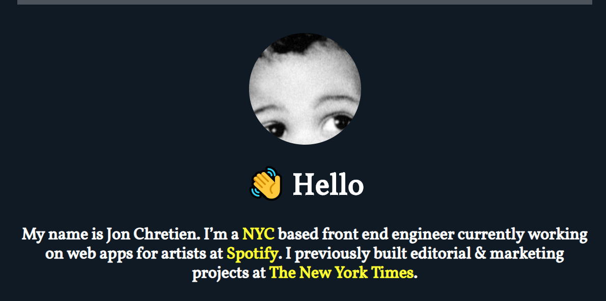

Adam Gool
Junior Web Developer
I have always loved to work on computers and learn new things. I am a very honest person and believe in fair treatment. Web Development has become something I love and it interests me the more I learn. I plan to build on the experiences I have gained within and outside of my choice of studies to achieve great success. I especially enjoy doing animation in my work. I have an eye for photography and always keep an eye out for something special. (All pictures used are my own.)
Animation in Web Developement
HTML - Hypertext Markup Language
CSS - Cascading Style Sheets
Syntactically Awesome Style Sheets
JavaScript
Specialise in video editing
Full Stack Web Development
CPUT Tourism Management
Rosebank College
Matric 2012
2016 - 2017 Wumdrop delivery driver
2014 - 2016 Completed 2 months crash course in film and photography.
2014 - 2016 at Oryx Media Specialise in film and media productions.
2012 - 2013 Part time Promoter at Brandsrock
This is my Code4CT project, it is in the process of being complete. It is my first JavaScript project.
Jon Chretien was the first big html and css project we had and I really enjoyed working on it.